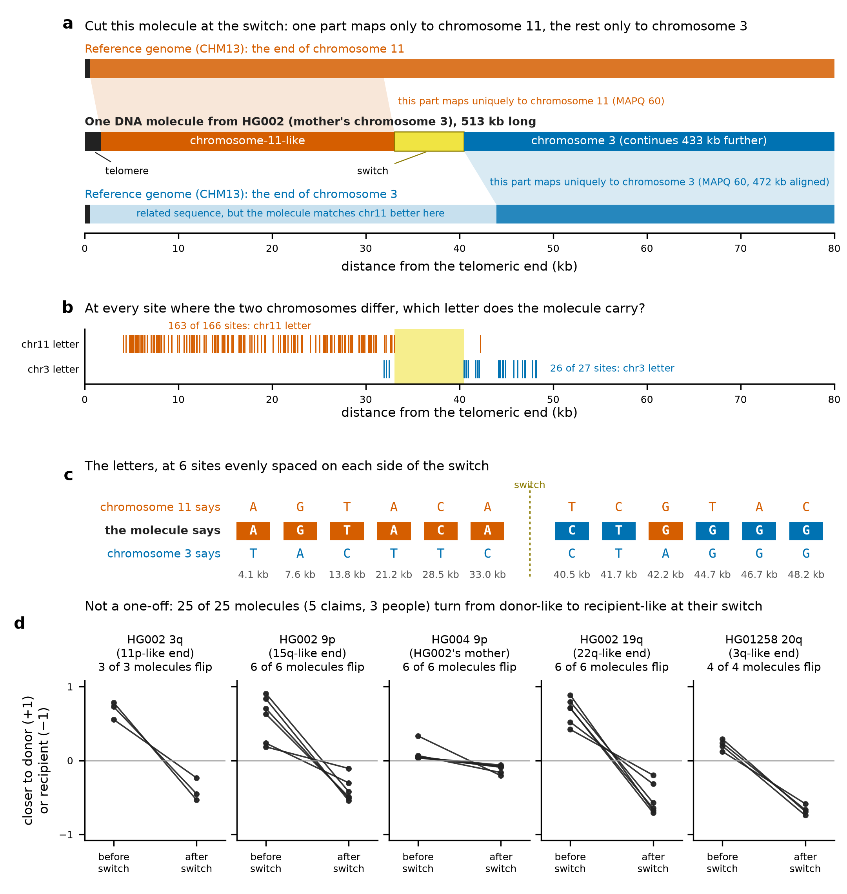
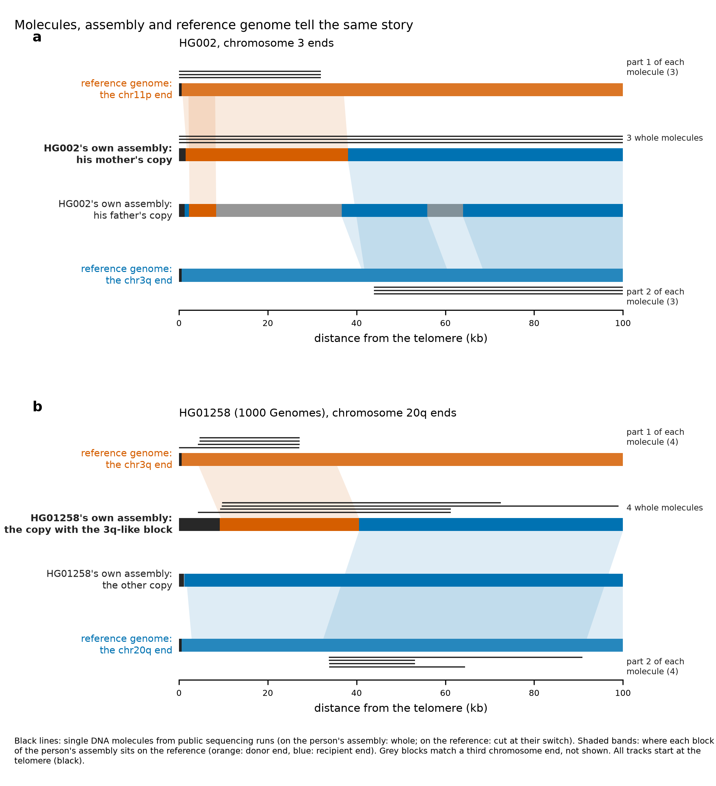
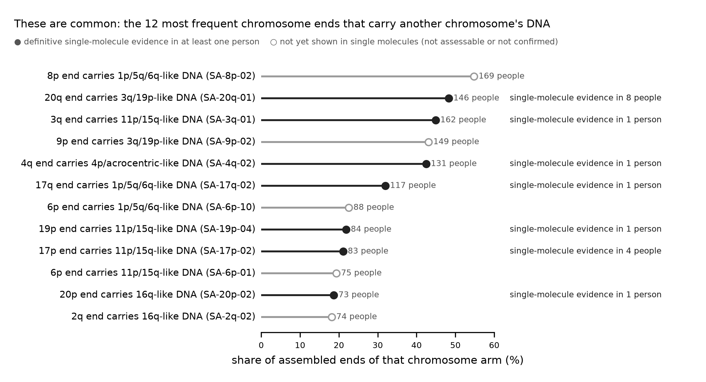
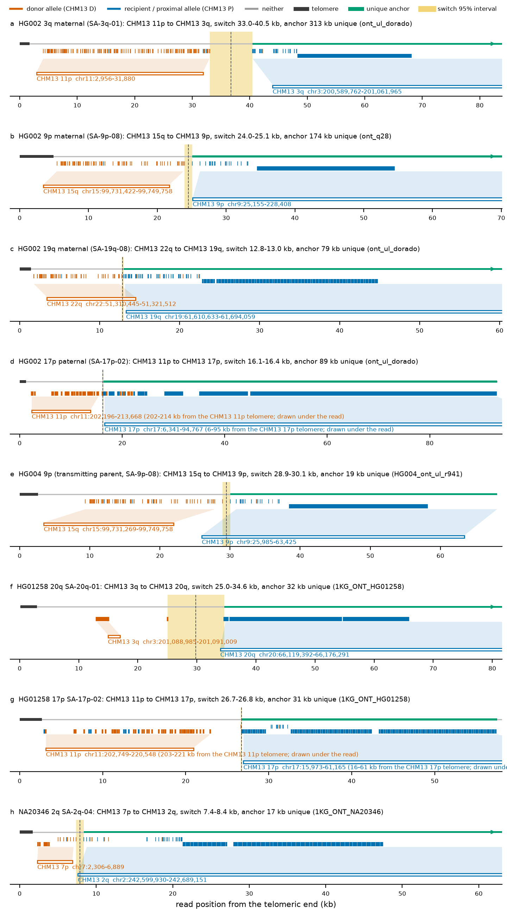
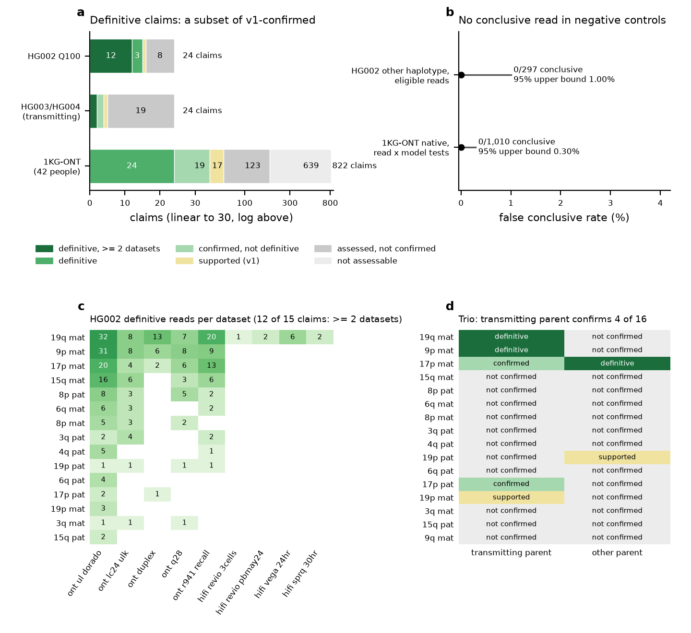

Read-level evidence
The evidence in one picture
A DNA molecule that was never used to build an assembly, read from one end to the other. If the atlas is right, a foreign chromosome end should look like this in a single molecule. It does.

3788f60a-2f28-4b28-917b-f1ecae3645e3 (ont_ul_dorado, HG002 Q100 public alignments). (a) Drawn to scale against the CHM13 ends of chromosomes 11 and 3; cut at the switch, its parts align to CHM13 chr11:600-31,925 and chr3:200,589,764-201,062,020 (both MAPQ 60). (b) Every site where the CHM13 chr11 and chr3 copies differ: which letter the molecule carries. (c) The letters at 6 evenly spaced sites on each side. (d) 25 of 25 molecules of five showcase claims turn from donor-like to recipient-like at their switch (2 kb window comparison; the 17p and 2q showcase claims are not shown because this simple comparison does not work there, see the pitch caption). Data: report/pitch_data/. (full resolution, PDF)- It starts with telomere (1.7 kb of TTAGGG repeats), so it is the real end of a chromosome.
- Then it reads like chromosome 11. At 163 of 166 sites where chromosomes 11 and 3 differ, it carries chromosome 11's letter, and this part maps uniquely to the end of chromosome 11.
- Then it switches to chromosome 3 and stays there: chromosome 3's letter at 26 of 27 sites, and 472 kb aligned to chromosome 3 at MAPQ 60. One molecule, 513 kb long.
The same flip appears in molecule after molecule: in different people, in HG002's mother, and on Oxford Nanopore and PacBio data. The allele in the picture, SA-3q-01, is carried by 162 people, and some foreign ends are carried by more than half of all people (below). Two-minute version: PITCH.pdf (Markdown).
The same story from three directions at once: the molecules on the person's own assembly, the assembly on the reference genome, and the molecules on the reference genome.

HG002#2#chr3_MATERNAL#R. (b) HG01258 chromosome 20q, allele SA-20q-01: 4 1000 Genomes nanopore molecules of the claim HG01258|20q|SA-20q-01. Tracks are cut at 100 kb. The interactive version of every definitive claim is the guided tour. (full resolution, PDF)
The formal test
Are the non-native terminal blocks of the catalogue real chromosome ends, or assembly artefacts? Single long reads that were not used to build the assemblies answer this independently: a read that starts in the telomere, carries the donor arm's paralog-diagnostic alleles up to a switch, continues with the recipient arm's alleles, and then anchors uniquely in the recipient chromosome is a physical molecule with the claimed structure.

Tier definitions
| criterion | status | definition |
|---|---|---|
| v1 conclusive read | pre-registered (criteria v1, frozen hash a89c5eaf023ed032) | terminal telomere; donor alleles distal and recipient/proximal alleles proximal to a maximum-likelihood switch (each segment ≥ 10 units at ≥ 80% purity, both log10 likelihood ratios ≥ 5); a ≥ 10 kb MAPQ-60 genome-wide anchor on the recipient chromosome within 2 Mb of its telomere; no internal telomere, adapter or foldback; ≥ 90% aligned |
| switch-concordant | pre-registered (amendment C2) | the read's switch interval (± 2 kb) overlaps the switch of the person's own assembly window analysed with the same unit model |
| unique anchor | reported in v1, required only for definitive | ≥ 1 kb of the anchor on CHM13 recipient positions that no other CHM13 end covers at ≥ 95% identity over ≥ 1 kb |
| own-assembly placement | post hoc (diagnostics) | the read aligns with more matching bases to the claimed end window of the same person's assembly than to any other end window of that person (HG002: the 92 Q100 windows; 1KG-ONT individuals: their ~90 HPRC Release 2 windows) |
| definitive read | post hoc, reporting only | all four rows above |
| definitive claim | post hoc, reporting only | v1 confirmed and ≥ 2 definitive reads from distinct molecules; multi-dataset when they come from ≥ 2 independent datasets |
Results by cohort
- HG002 Q100 (phased by the diploid Q100 assembly; 24 non-native ends; 16 public read alignment files, 12 independent datasets after molecule de-duplication; HERRO-corrected reads are derived and never counted): 15 confirmed, 1 supported; all 15 confirmed claims are definitive, 12 with definitive reads from ≥ 2 datasets.
- Trio: HG003 (father) and HG004 (mother), unphased GIAB reads; the transmitting parent confirms 4 HG002 claims and supports 1; 2 are definitive (placement on the transmitted HG002 haplotype is a proxy for the parent's own assembly).
- 1000 Genomes ONT (R9.4.1, 42 HPRC Release 2 individuals; unphased): 43 confirmed, 17 supported, 24 definitive. The 19 confirmed-but-not-definitive claims rest on anchors in CHM13-shared sequence (mostly SA-2q-02) or on reads that place best on another end of the same person.

Showcase claims
Eight exemplar claims are in the repository with their reads (CRAM and BAM on CHM13 v2.0, BAM on the person's own assembly windows, window FASTA, IGV sessions and a "what you should see" note):
- HG002#2#chr3_MATERNAL#R (3 reads; files and IGV sessions)
- HG002#2#chr9_MATERNAL#L (6 reads; files and IGV sessions)
- HG002#2#chr19_MATERNAL#R (6 reads; files and IGV sessions)
- HG002#1#chr17_PATERNAL#L (3 reads; files and IGV sessions)
- HG004|HG002#2#chr9_MATERNAL#L (6 reads; files and IGV sessions)
- HG01258|20q|SA-20q-01 (4 reads; files and IGV sessions)
- HG01258|17p|SA-17p-02 (5 reads; files and IGV sessions)
- NA20346|2q|SA-2q-04 (2 reads; files and IGV sessions)
Downloads
- claims.tsv: one row per claim (894 claims: v1 and definitive verdicts, read counts by tier and dataset, model, assembly switch, diagnostics note).
- reads.tsv.gz: one row per cited read (5,937 rows): public source URL, region, read group, units, purity, switch interval, anchor, own-assembly placement, tier and the samtools command that fetches the read.
- controls.tsv, criteria_v1.json, showcase/.
Full evidence set (every v1-conclusive read of every claim) as GitHub release assets:
| file | size | SHA-256 | content |
|---|---|---|---|
subtel_read_evidence_v1_1KG_ONT.tar.gz | 23.7 MB | b7fe1917993a9459… | per-claim CRAM/BAM/window FASTA, 1KG_ONT |
subtel_read_evidence_v1_HG002_Q100.tar.gz | 190.3 MB | a27bab22dac5c1ea… | per-claim CRAM/BAM/window FASTA, HG002_Q100 |
subtel_read_evidence_v1_HG002_trio.tar.gz | 16.3 MB | 0e5a08c9ceb9e95a… | per-claim CRAM/BAM/window FASTA, HG002_trio |
subtel_read_evidence_v1_tables.tar.gz | 9.7 MB | 629debd17045347a… | claims.tsv, reads.tsv.gz, controls.tsv, criteria, population_reads_all.tsv.gz (all 77,333 evaluated 1KG-ONT read rows) |
Replication test from a clean copy of the repository (no work/ directory): 9 of 9 claims and controls re-derived from the public sources gave identical per-read and claim verdicts (details).
Search all claims · Verify it yourself · FAQ for skeptics · full report (PDF)